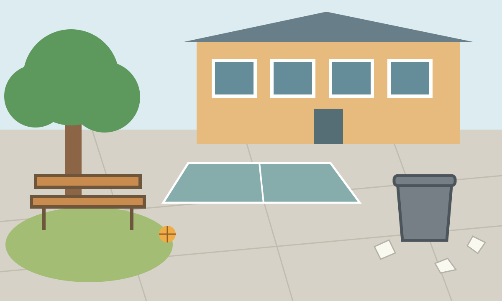

Klasse 7 · Medienwerkstatt
Was zeigen wir – und was lassen wir weg?
Du arbeitest in einer Schulredaktion. Prüfe Beiträge, verändere Bilder und begründe, was ihr veröffentlicht.

Deine Aufgaben
5 Aufgaben · 270 Minuten- MED-1Wer lenkt unseren Blick?Interessen erkennen und vier Einflusswege auseinanderhalten.45 Min.
- MED-2Stimmt die Meldung?Eine Meldung mit Originalbeleg und unabhängiger Beobachtung prüfen.45 Min.
- MED-3Ein Bild, zwei GeschichtenZwei eigene Bildwirkungen entwerfen, bearbeiten und revidieren.90 Min.
- MED-4Welche Erwartungen stecken im Bild?Rollenbilder und Aussehensnormen an Bild und Text untersuchen.45 Min.
- MED-5Welcher Weg ist sicher und passend?Kommunikationswege vergleichen und begründet sicher reagieren.45 Min.
Deine Ergebnisse
Eine Redaktionstabelle, ein Quellenurteil, eigene Bildvarianten, ein Kartenvergleich und begründete Kommunikationsentscheidungen. Persönliche Denkpausen bleiben privat.
Halte deine Notizen im bekannten Dokument oder Heft fest. Du brauchst keine Anmeldung.
Für Lehrpersonen
Hier finden Sie Durchführung, Sicherung, Projektionsimpulse und Briefings. Die Fassung ist redaktionell geprüft. Die Unterrichtserprobung steht aus.